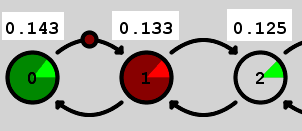
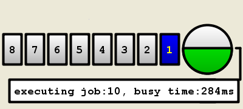
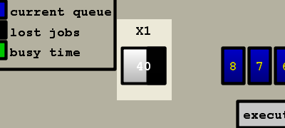
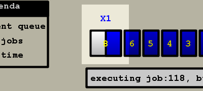

Quest'area è a sua volta divisa in due parti (come si vede dalla figura 7):
nella parte 4a viene visualizzato un pannello di tipo tabbed,
che permette di cambiare il tipo di visualizzazione. Sono mostrate
due etichette:
Stati è quella selezionata per default, e, quando attiva,
visualizza un grafico della coda a stati (da cui il nome), dove lo
stato colorato in rosso (nel caso di default) o comunque indicato
nella legenda come ``current queue'' rappresenta la dimensione
della coda in quel particolare momento. I valori presenti sugli stati
rappresentano la probabilità che ha quello stesso stato di essere
occupato e lo stesso vale per la ``tortina'' in verde chiaro presente
nello stato stesso (vedi figura 8), che viene indicata
nella legenda come ``probability''. Durante la simulazione gli
stati già riempiti saranno indicati in verde (default) e un pallino
sugli archi indicherà l'arrivo o l'esecuzione di un job.
Figure 8:
Stati - probabilità (4a).

Log visualizza un log degli arrivi e delle esecuzioni.
nella parte 4b viene visualizzata un'altra rappresentazione
grafica della coda (vedi figura 9). In questo caso
il cerchio a destra rappresenta il processore che esegue i job in
arrivo, mentre i rettangoli rappresentano la coda. Sono inoltre visualizzati
la coda media, il numero di job attualmente in coda e il livello medio
di utilizzo/tempo di esecuzione residuo3 e il job attualmente in esecuzione. All'occorrenza, verranno inoltre
visualizzati un rettangolo che rappresenta i jobs che non era possibile
visualizzare per motivi di spazio e un rettangolo che rappresenta
i jobs persi a causa del riempimento del buffer (ovviamente solo nel
caso di coda M/M/1/k).
Figure 9:
Coda (4b).

[job persi] [jobs che eccedono quelli visualizzabili]